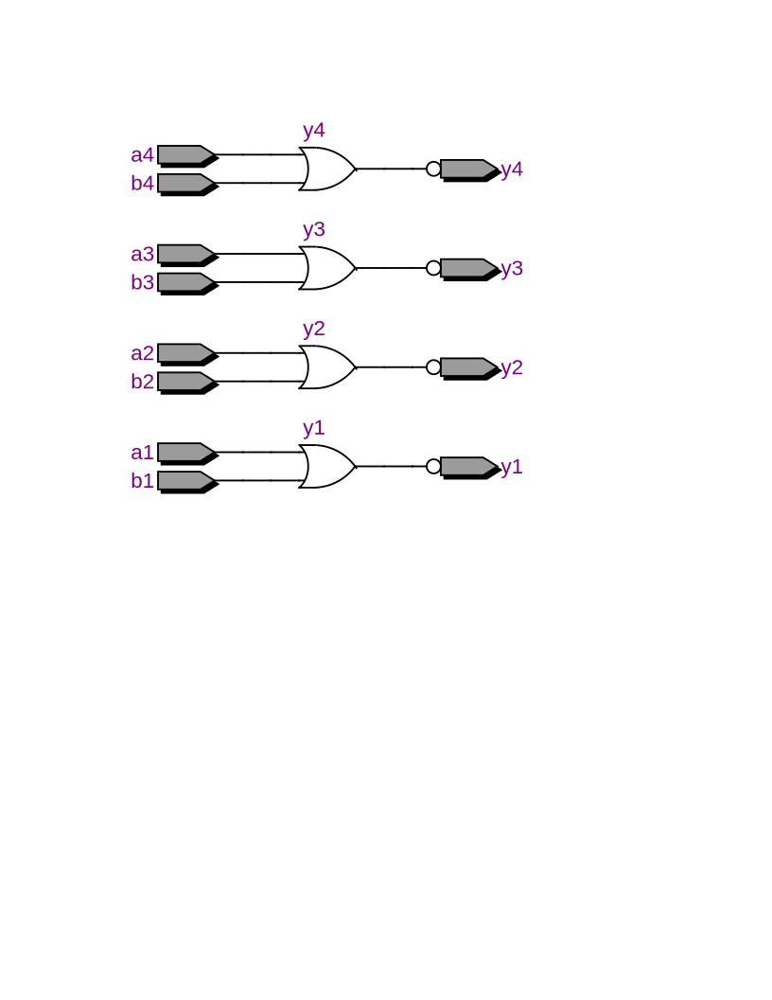
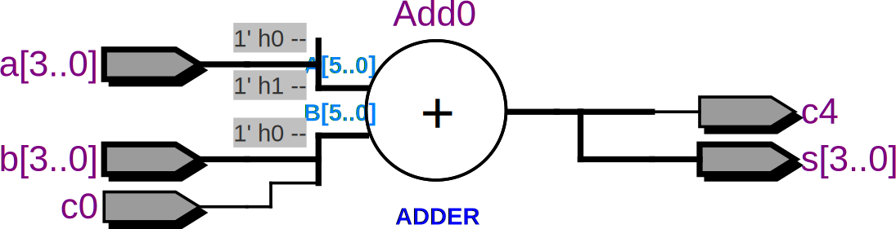
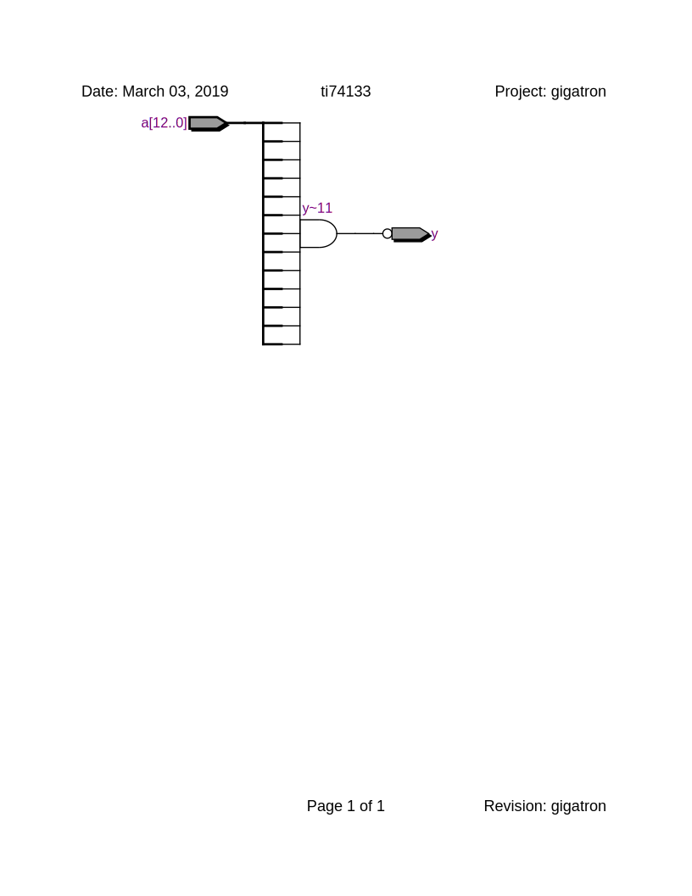

library ieee;
use ieee.std_logic_1164.all;
entity x7400 is
port (a1, b1, a2, b2, a3, b3, a4, b4: in std_logic; y1, y2, y3, y4: out std_logic);
end entity;
architecture behavior of x7400 is
begin
y1 <= not (a1 and b1);
y2 <= not (a2 and b2);
y3 <= not (a3 and b3);
y4 <= not (a4 and b4);
end architecture;
7402
library ieee;
use ieee.std_logic_1164.all;
entity ti7402 is
port (a1, b1, a2, b2, a3, b3, a4, b4: in std_logic; y1, y2, y3, y4: out std_logic);
end entity;
architecture behavior of ti7402 is
begin
y1 <= not (a1 or b1);
y2 <= not (a2 or b2);
y3 <= not (a3 or b3);
y4 <= not (a4 or b4);
end architecture;

7483
library ieee;
use ieee.std_logic_1164.all;
use ieee.numeric_std.all;
entity ti7483 is
port(
c0: in std_logic;
c4: out std_logic;
a, b: in unsigned(3 downto 0);
s: out unsigned(3 downto 0));
end entity;
architecture behavior of ti7483 is
signal tmp: unsigned(5 downto 0);
begin
tmp <= ('0' & a & '1') + ('0' & b & c0);
s <= tmp(4 downto 1);
c4 <= tmp(5);
end architecture;

74133
library ieee;
use ieee.std_logic_1164.all;
entity ti74133 is
port (a: in std_logic_vector(12 downto 0); y: out std_logic);
end entity;
architecture behavior of ti74133 is
begin
y <= not (a(0) and a(1) and a(2) and a(3) and a(4) and a(5) and a(6) and a(7) and
a(8) and a(9) and a(10) and a(11) and a(12));
end architecture;
